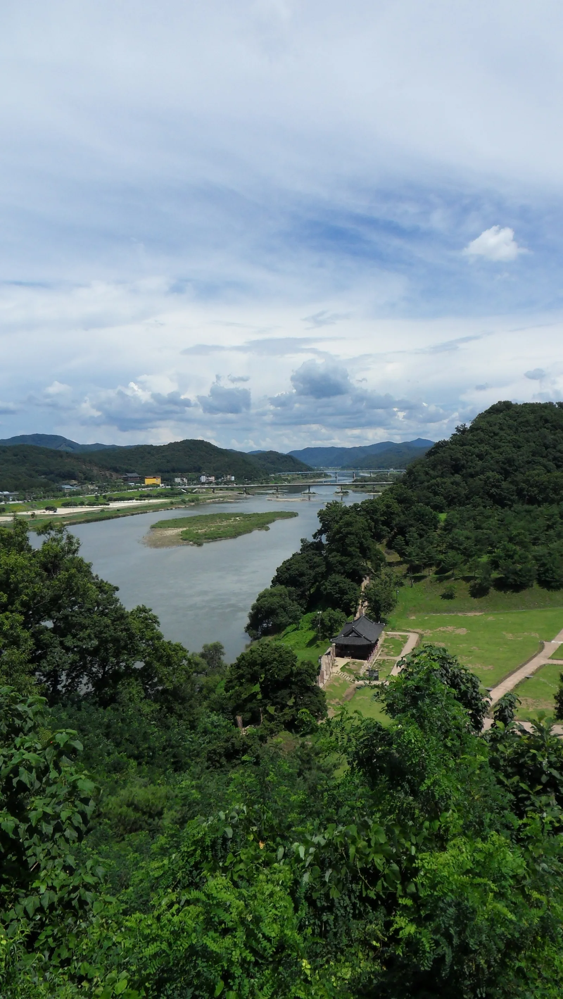
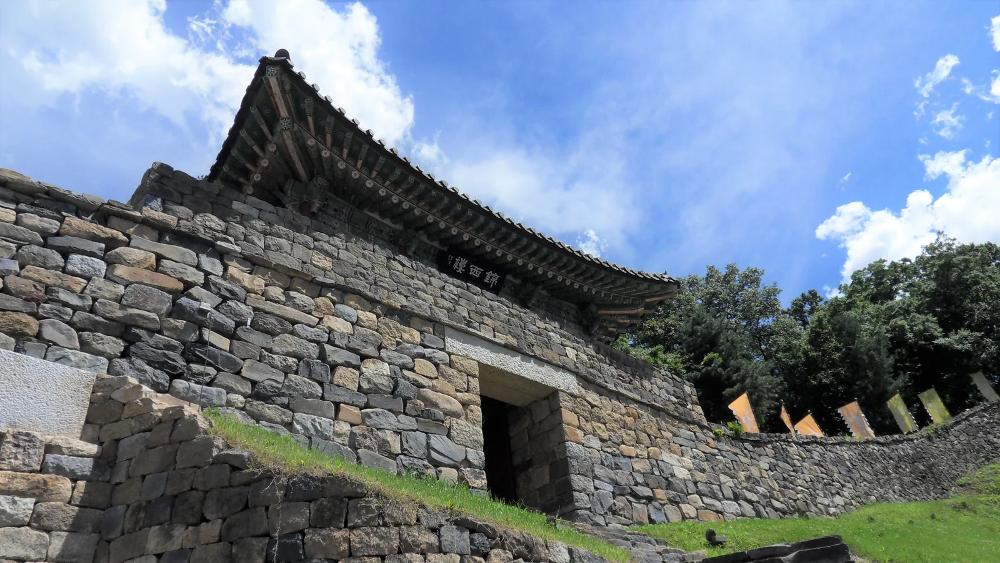
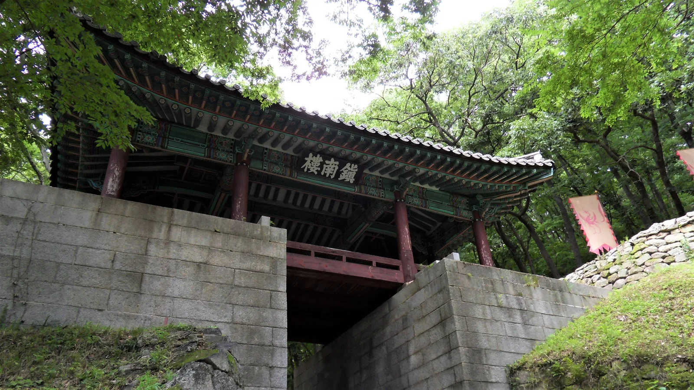
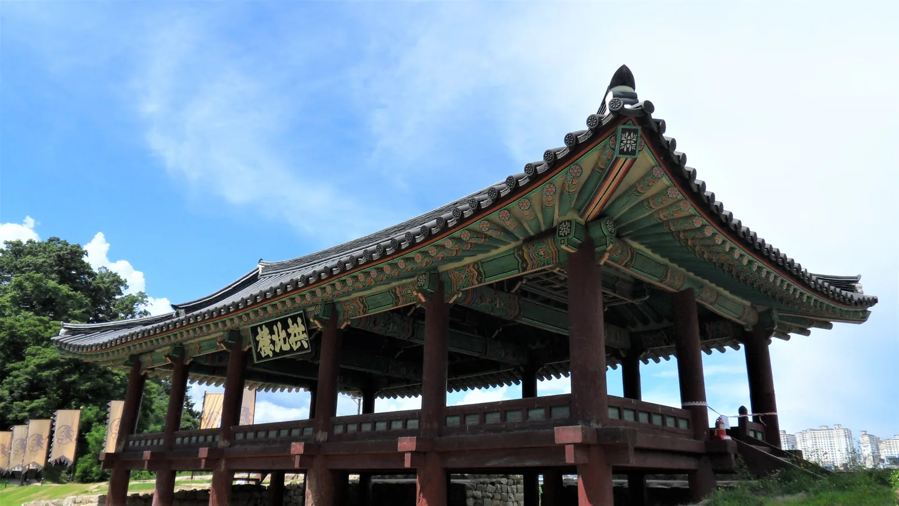
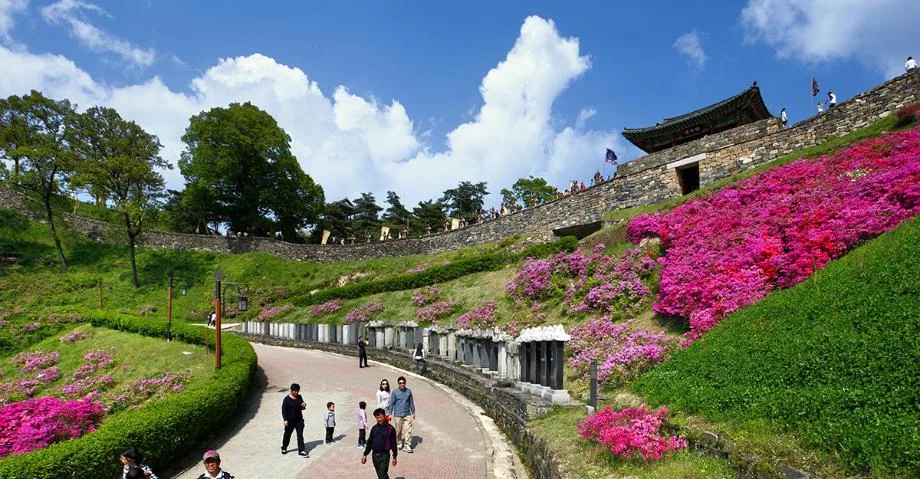
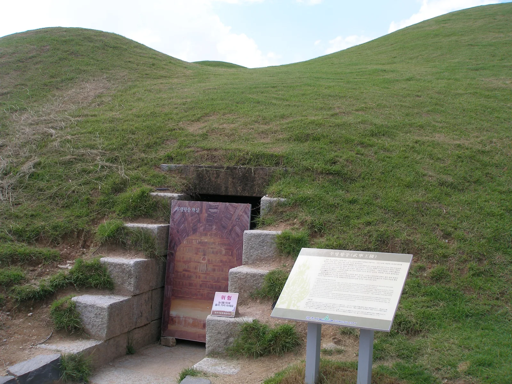
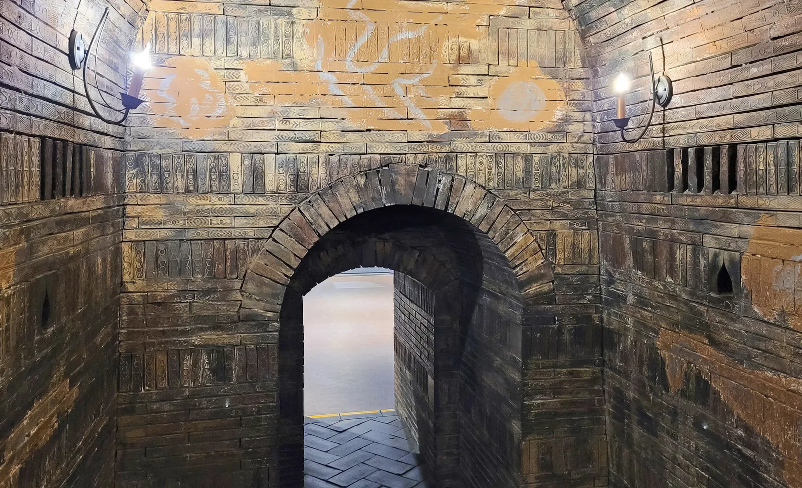
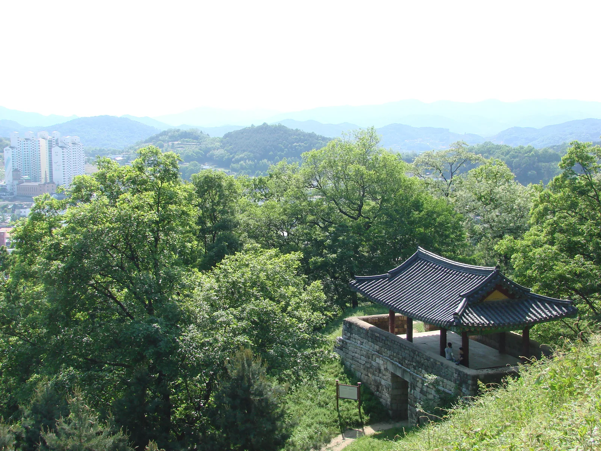

▲ 공산성 성곽에서 내려다본 금강. 백제는 이 강을 방어선 삼아 사비(부여)로 도읍을 옮기기 전까지 웅진(공주)을 도읍으로 삼았다
1971년 여름, 배수로 공사를 하던 인부들이 우연히 벽돌 하나를 들어냈다. 그 아래 나온 것은 1500년 가까이 아무도 손대지 않은 백제 25대 무령왕과 왕비의 합장묘였다. 도굴을 한 번도 당하지 않은 채 온전한 모습으로 발견된 이 무덤은 한국 고고학 최대 발굴 성과 중 하나로 꼽힌다. 그리고 그 무덤이 자리한 송산리고분군은 바로 옆 금강변 산성 공산성과 함께 2015년 유네스코 세계유산 '백제역사유적지구'에 이름을 올렸다. 이 기사는 공산성 성곽 산책 코스부터 무령왕릉이 왜 실물 대신 모형으로만 공개되는지, 두 곳을 하루에 묶어 도는 법까지 정리했다.
미리 보기
- 공산성은 사적 제12호, 성벽 전체 길이 2,660m의 백제 산성으로 금강을 낀 방어 요새
- 무령왕릉은 1971년 발굴, 도굴되지 않은 상태로 발견돼 국보 12건·유물 약 4,600점 출토
- 무덤 실물 내부는 보존을 위해 비공개, 송산리고분군 모형전시관에서 재현 관람 가능
- 공산성·무령왕릉 모두 2015년 유네스코 '백제역사유적지구'로 등재
1. 공산성은 어떤 곳인가 — 금강을 낀 백제의 방어 요새

▲ 공산성 서쪽 문 금서루(錦西樓). 1993년 옛 서문 터에 복원됐다 ⓒ Wikimedia Commons
공산성은 충남 공주시 산성동, 금강 남쪽 해발 110m 능선에 자리한 백제시대 산성이다. 1963년 사적 제12호로 지정됐으며, 공주시 문화관광 공식 자료에 따르면 성벽 전체 길이는 2,660m로, 토성으로 알려진 동쪽 구간 735m를 제외한 나머지는 석성으로 이뤄져 있다(일부 자료에서는 약 2,200m로 소개하기도 한다). 동서로 약 800m, 남북으로 약 400m의 장방형 능선을 따라 쌓은 포곡형 산성으로, 북쪽으로 금강이 흘러 천연의 방어선 역할을 했다. 백제가 고구려의 남하에 밀려 한성(서울)에서 웅진(공주)으로 도읍을 옮긴 475년부터, 다시 사비(부여)로 천도한 538년까지 63년간 왕성이 있던 자리로 여겨진다.
성문은 원래 4방에 있었으나 현재는 남문인 진남루와 북문인 공북루만 옛 모습을 유지하고 있고, 동문·서문은 터만 남았던 것을 1993년 각각 영동루와 금서루로 복원했다. 성 안에는 조선 영조 10년(1734년)에 세운 정자 쌍수정, 절벽 위 사찰 영은사, 연못 터인 연지·임류각지 등이 남아 있다.

▲ 공산성 남문 진남루(鎭南樓). 4개 성문 중 옛 모습이 남아 있는 두 곳 중 하나다 ⓒ Wikimedia Commons
| 항목 | 내용 |
|---|---|
| 지정 문화유산 | 사적 제12호(1963년 지정) / 유네스코 백제역사유적지구(2015년) |
| 둘레(성벽 전체 길이) | 2,660m(공주시 문화관광 기준, 석성 1,925m·토성 735m) |
| 주요 시설 | 진남루(남문)·공북루(북문)·금서루(서문, 복원)·영동루(동문, 복원)·쌍수정 |
| 백제 도읍기 | 475년(웅진 천도)~538년(사비 천도), 63년간 왕성 소재지로 추정 |
2. 성곽길 산책 — 진남루에서 공북루까지

▲ 금강을 마주한 공산성 북문 공북루(拱北樓). 단청과 처마 곡선이 화려하게 남아 있다 ⓒ Wikimedia Commons
공산성의 매력은 성곽 자체를 걷는 트레킹에 있다. 능선을 따라 이어지는 성곽길은 완주까지 1시간 안팎이면 충분하고, 곳곳에 설치된 전망 지점에서 금강과 공주 시가지를 내려다볼 수 있다. 특히 북문 공북루 인근은 금강을 가장 가까이서 조망할 수 있는 구간으로 꼽힌다. 입장료는 성인 기준 3,000원 수준으로 저렴한 편이고, 성곽 자체가 높지 않아 무리 없이 걸을 수 있는 코스로 소개된다.
성 안에는 백범 김구 선생이 은거했던 흔적이 남은 광복루 등 근현대사와 얽힌 장소도 있어, 백제 유적과 조선·근대 이야기가 겹겹이 쌓인 공간이라는 점도 공산성의 특징이다.

▲ 철쭉이 만개한 봄철 공산성 성곽길. 능선을 따라 이어지는 산책로 곳곳에서 계절 꽃을 함께 즐길 수 있다 ⓒ Wikimedia Commons
3. 무령왕릉 — 도굴되지 않은 채 발견된 백제 왕의 무덤

▲ 송산리고분군의 무령왕릉 봉분과 현실 입구. 보존을 위해 1997년부터 내부 출입이 통제됐다 ⓒ Wikimedia Commons
공산성에서 서쪽으로 차로 5분 거리, 금강 남쪽 구릉에는 송산리고분군이 있다. 백제 벽돌무덤과 굴식돌방무덤 등 총 17기의 무덤이 모여 있는 이 고분군에서 무령왕릉을 포함한 7기가 정비돼 있다. 무령왕릉은 백제 제25대 왕인 무령왕(재위 501~523년)과 왕비의 합장묘로, 1971년 배수로 공사 중 우연히 발견되기 전까지 도굴 피해를 전혀 입지 않은 상태로 남아 있었다는 점에서 한국 고고학사에 남을 발굴로 평가된다.
이 발굴에서 약 4,600점의 유물이 쏟아졌고, 이 가운데 국보로 지정된 것만 12건에 이른다. 무령왕과 왕비의 금제관식(국보 제154·155호), 금귀걸이(국보 제156·157호), 무덤 주인을 밝혀준 지석(국보 제163호), 진묘수 역할을 한 석수(국보 제162호) 등이 대표적이다. 특히 지석은 '영동대장군 백제 사마왕(무령왕의 이름)'이라는 문구를 통해 무덤 주인이 누구인지 명확히 확인시켜준, 매우 드문 사례로 꼽힌다.
4. 실물 대신 모형전시관 — 왜 내부를 볼 수 없나

▲ 송산리고분군 모형전시관에 재현된 무령왕릉 현실 내부. 벽돌을 쌓아 만든 아치형 구조를 그대로 옮겼다 ⓒ Wikimedia Commons
많은 방문객이 궁금해하는 부분이지만, 무령왕릉을 비롯한 송산리고분군의 무덤 내부는 직접 들어가 볼 수 없다. 발굴 이후 한동안 관람이 허용됐으나, 습기와 관람객 출입으로 인한 훼손 우려가 커지면서 이후 출입이 제한됐다. 대신 무덤 앞에는 봉분과 현실 입구까지만 접근할 수 있도록 정비돼 있고, 실제 내부 구조를 보고 싶다면 근처에 별도로 마련된 송산리고분군 모형전시관을 관람하면 된다.
모형전시관에서는 무령왕릉의 벽돌무덤 구조뿐 아니라, 사신도 벽화가 그려진 6호분(벽돌무덤), 굴식돌방무덤인 5호분의 내부까지 실물 크기로 재현해 놓아 실제 무덤에 들어가지 못하는 아쉬움을 상당 부분 채워준다. 무덤 내부 구조와 부장품 배치를 눈높이에서 자세히 볼 수 있다는 점에서, 오히려 조명이 어두운 실제 무덤보다 관람 환경이 낫다는 평가도 있다.
| 항목 | 내용 |
|---|---|
| 지정 문화유산 | 사적 제13호 / 유네스코 백제역사유적지구(2015년) |
| 관람시간(하절기 3~10월) | 09:00~18:00 |
| 관람시간(동절기 11~2월) | 09:00~17:00 |
| 입장료 | 어른 3,000원 / 청소년 2,000원 / 어린이 1,000원(변동 가능, 방문 전 확인 권장) |
| 무덤 내부 | 실물 비공개, 송산리고분군 모형전시관에서 재현 관람 |
5. 공산성·무령왕릉 하루 코스로 묶기

▲ 유네스코 세계유산 '백제역사유적지구' 표지석이 선 공산성 입구 사진=한국관광공사
두 유적은 차로 5분, 도보로도 20~30분 안팎이면 오갈 수 있는 거리에 있어 하루 일정으로 묶기에 무리가 없다. 오전에는 성곽길을 따라 공산성을 한 바퀴 돌며 금강 조망을 즐기고, 오후에는 송산리고분군과 모형전시관에서 백제 왕실 문화의 정수를 살펴보는 동선이 자연스럽다. 공주 시내에는 웅진백제역사관 등 관련 전시 시설도 있어, 시간 여유가 있다면 함께 들러 백제 웅진 시대의 맥락을 좀 더 깊이 이해할 수 있다.

▲ 공산성 성곽 정자에서 내려다본 공주 시가지. 백제 왕도였던 자리가 지금은 현대 도시와 겹쳐 있다 ⓒ Wikimedia Commons
✅ 공주 공산성·무령왕릉, 가기 전 체크리스트
· 공산성은 사적 제12호, 성벽 전체 길이 2,660m의 금강변 백제 산성
· 남문 진남루·북문 공북루는 옛 모습이 남았고, 동·서문은 1993년 복원
· 무령왕릉은 1971년 발굴, 도굴되지 않은 채 발견돼 국보 12건·유물 약 4,600점 출토
· 무덤 실물 내부는 보존을 위해 비공개, 송산리고분군 모형전시관에서 재현 관람
· 무령왕릉 입장료는 성인 3,000원 수준(변동 가능)
· 공산성·무령왕릉 모두 2015년 유네스코 '백제역사유적지구'로 등재, 차로 5분 거리라 하루 코스로 연계 가능